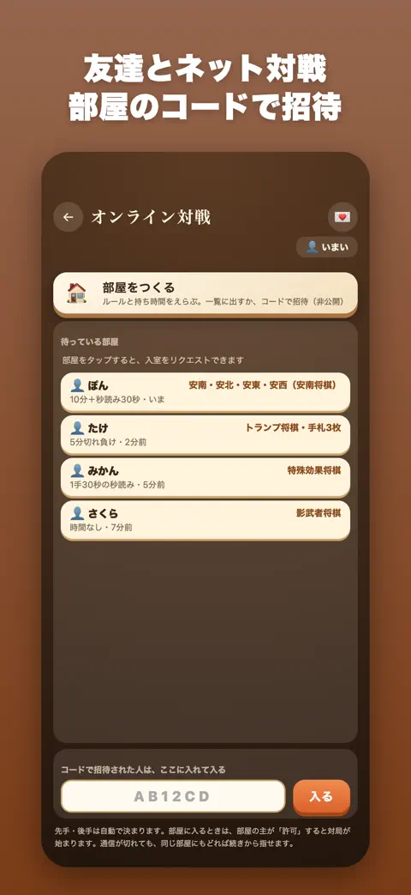
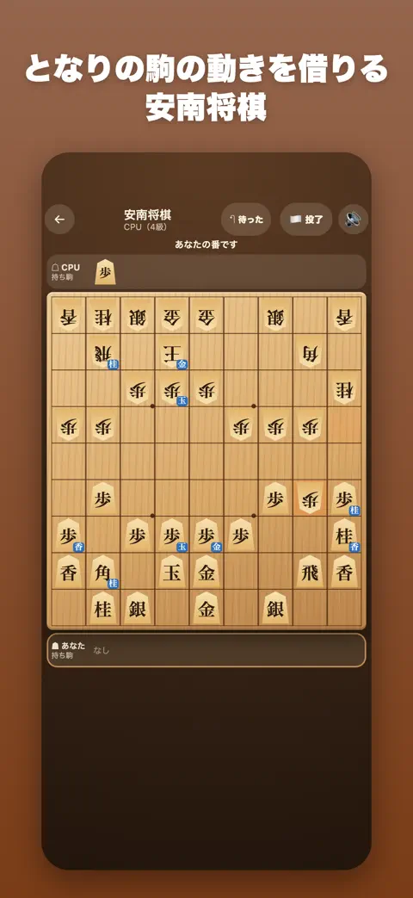
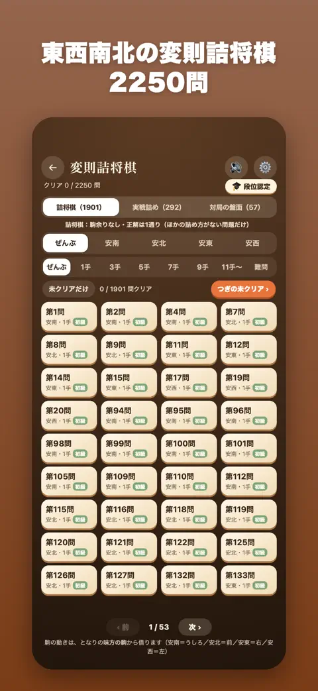

変則将棋のオンライン対戦（iPhone）
変則将棋対戦
いつもの将棋に、ひとひねり。
友達とネットで勝負しよう。
安南将棋・トランプ将棋・王手将棋・影武者将棋・縛り将棋…。いつもの将棋を少し変えた「変則将棋」を、友達とネットで、CPU と、2人で1台で遊べます。東西南北の変則詰将棋2250問つき。
App Store で無料ダウンロード無料・広告あり／iPhone（iOS 18 以降）
▶ プレイのようす（音なし）
変則将棋対戦とは？
変則将棋対戦は、安南将棋・トランプ将棋・王手将棋・影武者将棋・縛り将棋などの変則将棋を、友達とネットで、CPUと、2人で1台で。部屋のコードで対局でき、アカウント不要。東西南北の変則詰将棋2250問つき。無料（広告あり）のiPhoneアプリ。
- 料金無料・広告あり
- 対応iPhone（iOS 18 以降）
- ジャンル対戦





部屋のコードで、すぐ対局
- アカウント不要部屋をつくると6文字のコードが出ます。友達はコードを入れるだけ。ログインもいりません。
- ルールごとのレートはじめは1500。CPU 戦とオンライン対戦の勝ち負けで上がったり下がったりします。
- 持ち時間も選べるなし・切れ負け・持ち時間＋秒読み・秒読みのみ・フィッシャー。通信が切れても続きから。
詰将棋の段位認定もあります（10問を15分で解いて、10級から七段まで）。
こんな人におすすめ
- 将棋のルールを知っていて、いつもとちがう将棋を指してみたい人
- 友達や家族と、ネットで手軽に対局したい人
- ひねりのある詰将棋を解きたい人
遊び方は3ステップ
- ルールをえらぶ安南・トランプ・王手・影武者・特殊効果・縛り将棋・本将棋から選びます。
- 相手をえらぶCPU（10級〜五段の10段階）、友達とネット対戦、2人で1台から選びます。
- 対局友達とは、部屋をつくって6文字のコードを送るだけ。対局のあとは棋譜も見返せます。
ルール
安南・安北・安東・安西
となりの味方の駒の動きを借りる。安南はうしろ、安北は前、安東は右どなり、安西は左どなりの駒の動きになる。9×9 と 5×5。
トランプ将棋
A（1）〜9 を4組の36枚とジョーカー2枚。カードの数字の筋にいる駒だけを動かせる（右はしが1筋）。ジョーカーはどの筋でもいい。
縛り将棋
囲い（美濃囲い・矢倉囲い・穴熊など12種類）や戦法（中飛車・棒銀など14種類）の形ができるまで、敵陣に入れない。
王手将棋・影武者将棋
王手将棋は、先に王手をかけたほうがその場で勝ち。影武者将棋は、ひそかに決めた1枚（影武者）を取られたら負け。
変則詰将棋
安南・安北・安東・安西の詰将棋が2250問。1手から15手まで。
特徴
- 2250問の変則詰将棋安南・安北・安東・安西。1手から15手まで
- 10段階の CPU10級・8級・6級・4級・2級・初段〜五段
- 13種類の特殊効果カード二手指し・封印・地雷・鉄壁など
- 26の形のお題縛り将棋：囲い12種類・戦法14種類
さいきんのアップデート
バージョン 1.0.21（2026年11月23日）
- BGMをつけました（タイトルの「BGM」でオン・オフできます）
- 画面の上に時計と電池を出すようにしました
- ついたて将棋のルール説明を、実際の動きに合わせて直しました
くわしい遊び方
盤の大きさ・駒・ルールをちょっとずつ変えた将棋を、友達とオンラインで、CPU（10級〜五段）と、2人で1台のスマホで対局します。安南・安北・安東・安西などの変則詰将棋（2250問）と、「美濃囲いができるまで敵陣に入れない」などの縛りをつけて CPU と戦う縛り将棋も遊べます。
- 対局する：ルールを選ぶと、駒の動きと遊び方の説明が出ます。CPU と対局するか、2人で1台かを選んで始めます
- 安南将棋：すぐうしろに味方の駒がいると、その駒の動きを借ります（安北はすぐ前、安東は右どなり、安西は左どなり）
- トランプ将棋：めくったカードの数字の筋にいる駒だけ動かせます。王手のとき・その筋で指せる手がないときは、何を指してもかまいません
- オンライン対戦：「部屋をつくる」で出る6文字のコード・招待リンク・QRコードを友達に送ると対局できます。招待リンクはブラウザでも開けるので、iPhone を持っていない友達とも遊べます。持ち時間（切れ負け・秒読み・フィッシャー）も選べます。部屋を「非公開」にしなければ、オンライン対戦の一覧に出て、知らない人とも対局できます
- レート：ルールごとに、CPU 対局とオンライン対戦の勝ち負けでレート（はじめは1500）が上下します。オンライン対戦では、おたがいのレートが表示されます。「待った」を使った対局は、勝ってもレートが上がりません
- 特殊効果将棋：二手指し・封印・入れ替えなどのカードを、1局に1回だけ使えます
- 変則詰将棋：攻め方は毎回王手をかけて、決められた手数で詰ませます。ヒントは1日3回、答えは1日1回まで無料です。ヒントは短い動画を見ると3回にもどり、答えは動画1本で1回見られます
- 縛り将棋：自分（や相手）に縛りをつけて CPU と対局します。縛りを守って勝つと、チャレンジのクリアになります
- 詰将棋をつくる：自分で作った問題を検証して、コードで友達に送れます
よくある質問
安南将棋をオンラインで遊べるアプリは？
変則将棋対戦では、安南・安北・安東・安西を、部屋のコードを送るだけで友達とオンライン対戦できます。アカウントはいりません。CPU や2人で1台でも遊べます。
トランプ将棋のルールは？
ふつうの本将棋に、A〜9 のカード36枚とジョーカー2枚を足したものです。カードの数字の「筋」にいる駒だけを動かせます。ジョーカーはどの筋でも動かせます。
無料ですか？
はい、無料でダウンロードして遊べます（広告あり）。App Store のページからどうぞ。
どの端末で使えますか？
iPhone（iOS 18 以降）で使えます。Android 版はありません。
CPU が強すぎる・弱すぎる
対局の前の画面で、CPU の段位を10級〜五段から選べます。本将棋は盤が大きいので、CPU が考えるのに少し時間がかかります。
音を消したい
画面右上のスピーカーのボタンで、音のオン・オフを切り替えられます。
記録を消したい・引き継ぎたい
解いた詰将棋や成績は、この iPhone の中にだけ保存しています。アプリを削除すると記録も消えます。ほかの端末への引き継ぎにはまだ対応していません。
オンライン対戦がつながらない
部屋をつくった人と入る人の両方がインターネットにつながっているか確かめてください。途中で切れたときは、同じ部屋にもう一度入ると続きから指せます。部屋のコードは英数字6文字です。
ヒント・答えの無料回数は？
ヒントは1日3回、答えは1日1回まで無料です（夜0時にもどります）。それ以上は、短い動画広告を1本見ると、ヒントは3回にもどり、答えは1回見られます。解けた問題の正しい手順はいつでも無料で見られます。
忍・砲・蛙はどんな駒？
このアプリのオリジナルの駒です。忍は桂馬の跳び方を8方向に、蛙は縦横ななめにちょうど2マス跳び、砲は縦横にすべって、取るときだけ1枚はさんで撃ちます。対局の前の説明に、動ける場所の図があります。
お問い合わせ
不具合やご要望は、メールでお知らせください。お使いの iPhone の機種と iOS のバージョンを書いていただけると助かります。